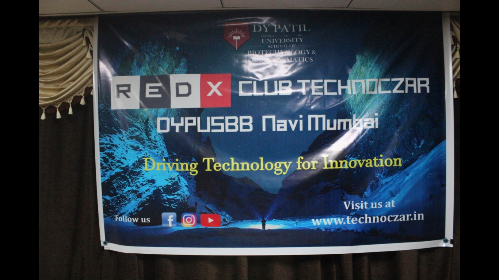

REDX Club TECHNOCZAR 2017-18
The Club Technoczar was officially launched on 26th February 2018.
The core team members of club TECHNOCZAR 2017-18:
1. Coordinator : Arushi Sharma:
2. Treasurer : Vyanktesh Zambare
3. Web Master: Siddhartha Sen
4. Project Lead :Urmi Shah
5. Project Lead :Aditya Seth
6. Project Lead: Aditya Singh
PROJECTS
cost effective and biodegradable sanitary napkins or diapers
Urmi Shah introduced the idea to design cost effective and biodegradable sanitary napkins or diapers
The project lead did a lot of research and came to a conclusion that making biodegradable pads would be more beneficial than destroying the current ones because that would cause more pollution.
holistic system for remediation of stress
Aditya Seth proposed the project on holistic system for remediation of stress. Various surveys were conducted to determine the best ways for reducing stress.
alternative material used for construction- hempcrete
Aditya Singh proposed about the alternative material used for construction- hempcrete. The main aim of this project was to bring about Hempcrete awareness as Hempcrete can be used as a more eco friendly substitute for cement.
GALLERY
